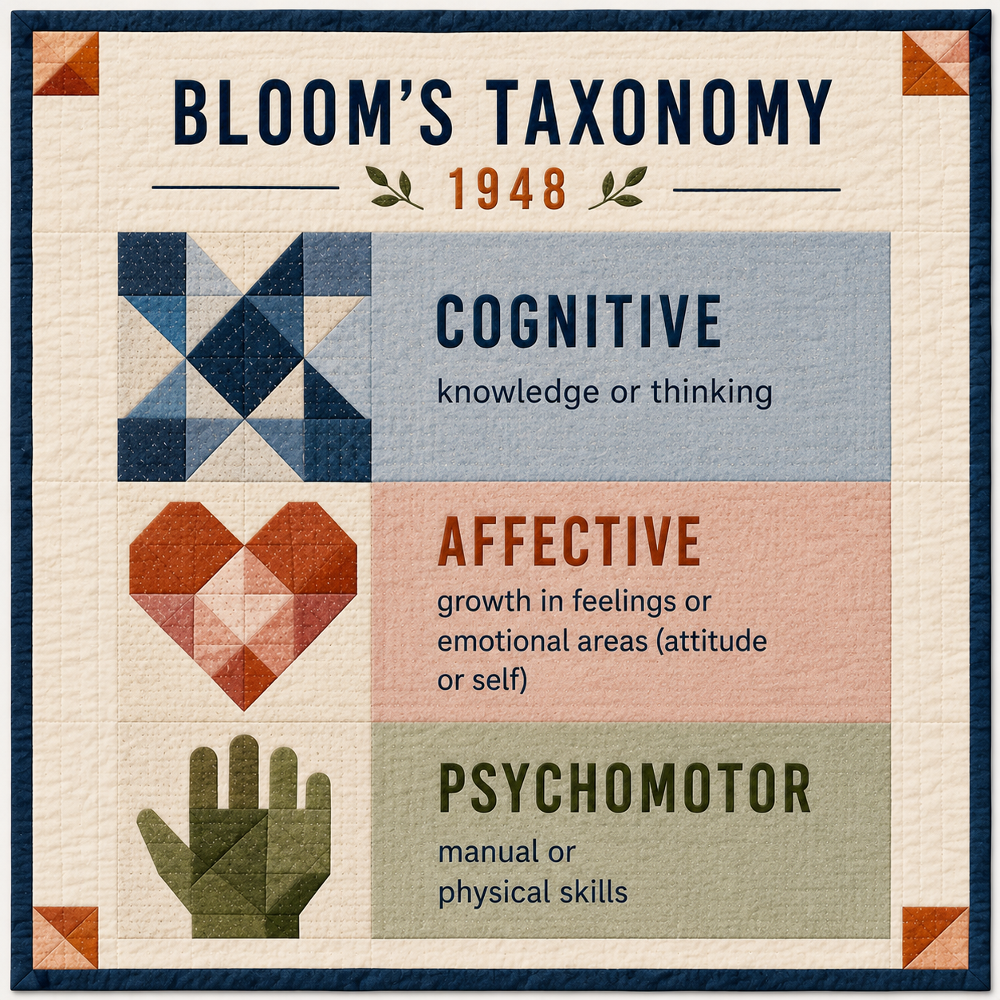
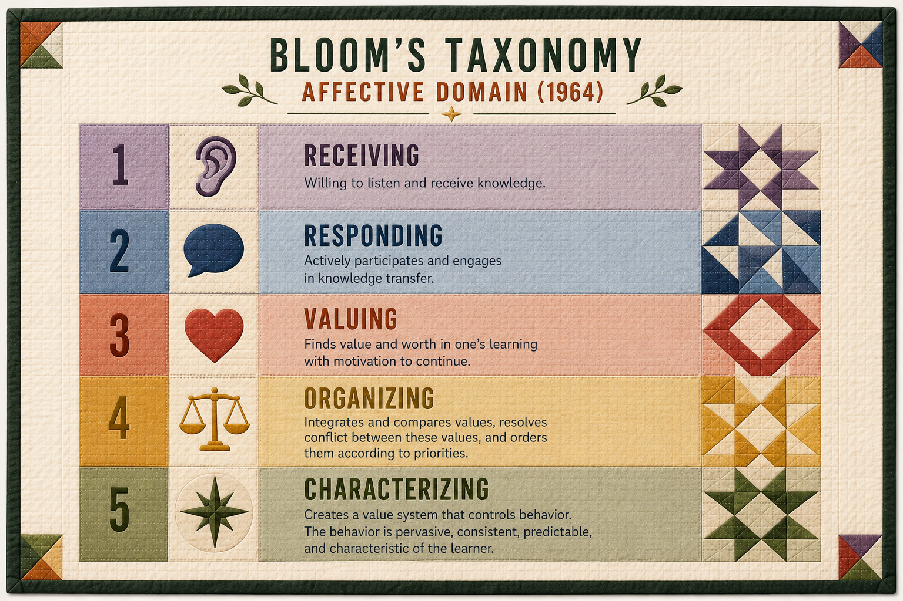
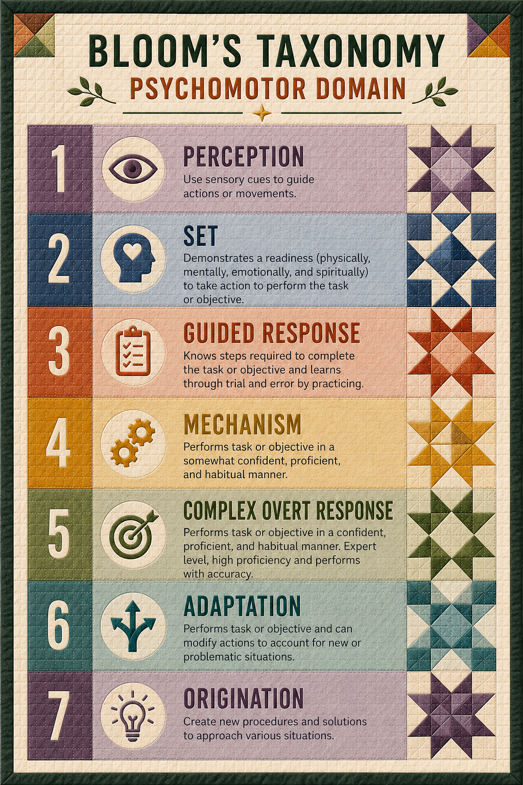
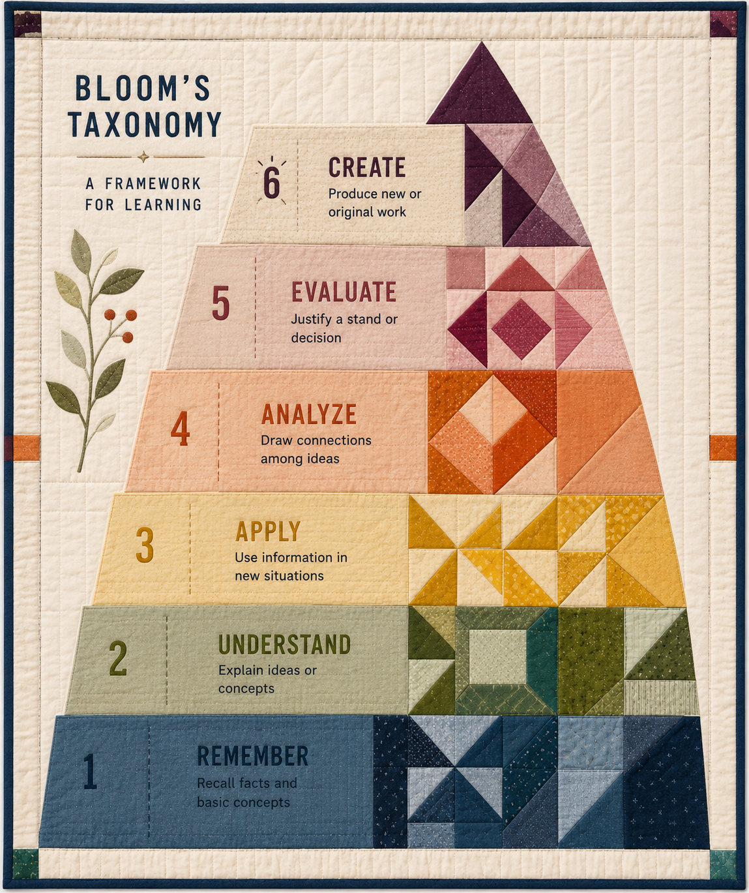
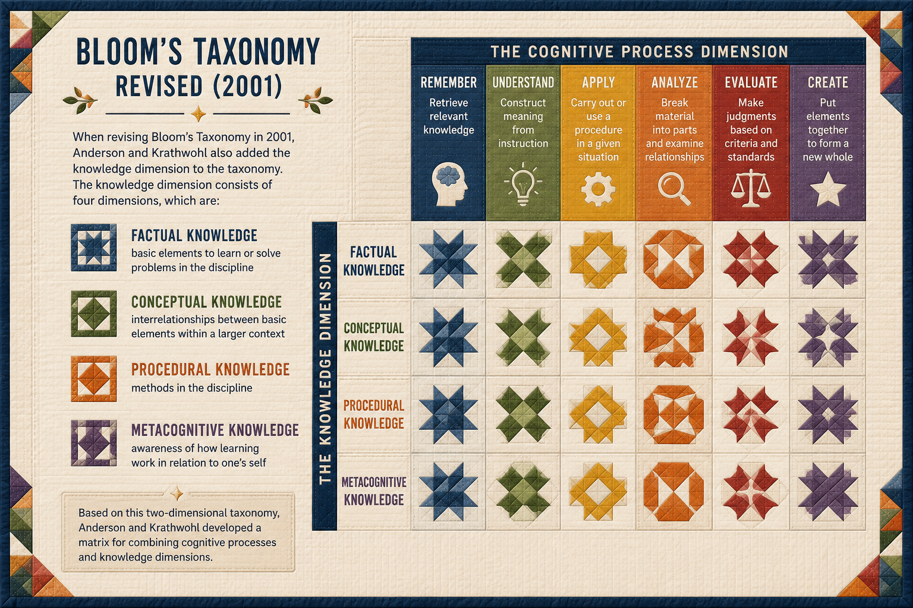
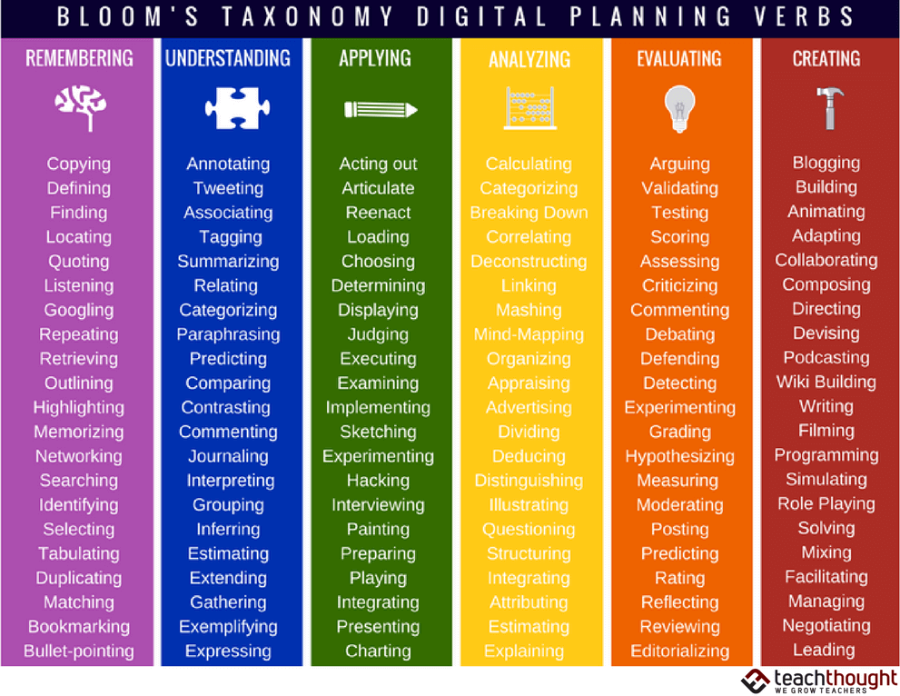
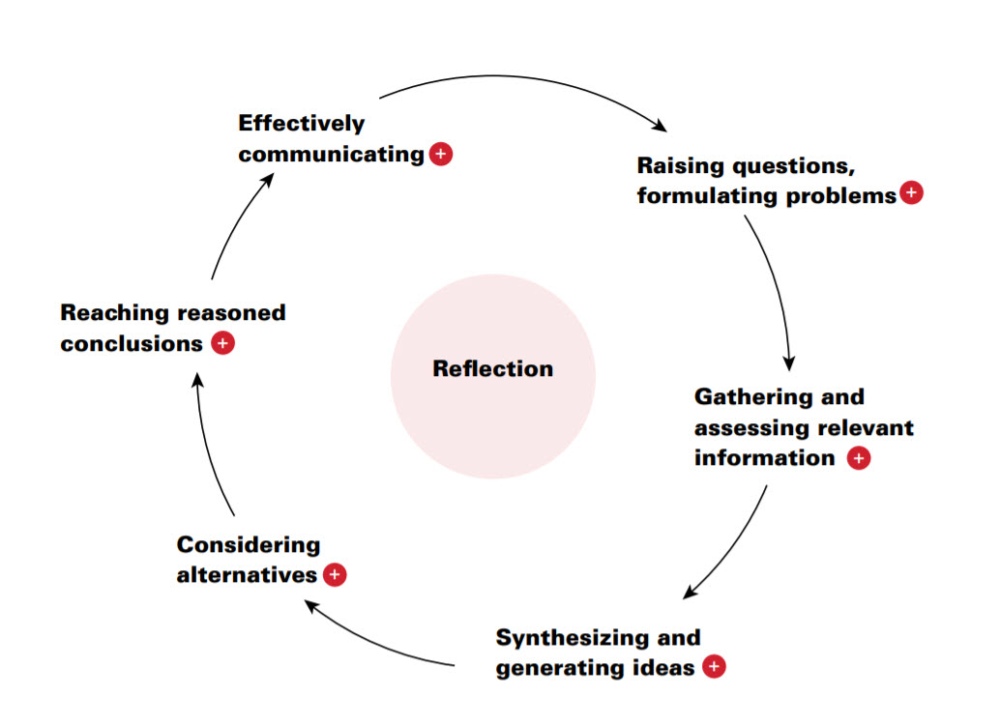
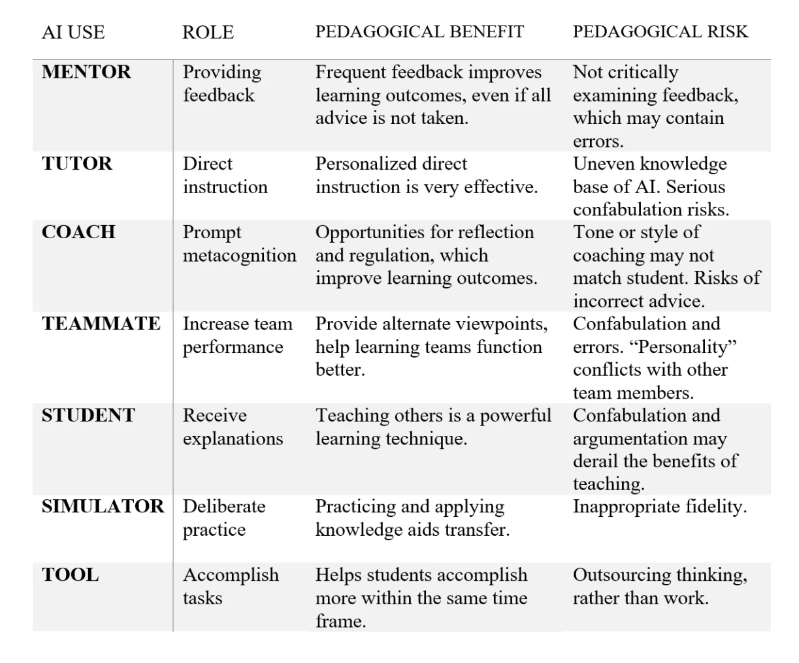
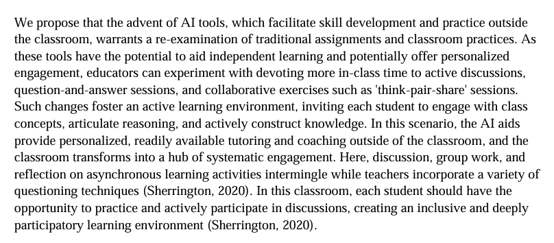

ENG 6813 · Salter & Stanfill
The original taxonomy

From the 1948 meeting of university educators that produced Bloom’s taxonomy.
Feelings, values, attitudes

Simpson 1966, 1972 · Dave 1970 · Harrow 1972

Verbs, not nouns

Two-Dimensional Taxonomy (2001 Revision)

These taxonomies still play a major role in how learning objectives are structured, including in digital pedagogy.

Huber & Hutchings, 2004
“One of the great challenges in higher education is to foster students’ abilities to integrate their learning across contexts and over time. Learning that helps develop integrative capacities is important because it builds habits of mind that prepare students to make informed judgments in the conduct of personal, professional, and civic life; such learning is, we believe, at the very heart of liberal education.” — Huber & Hutchings 2004: 1
Three traditions Mahony et al. draw on
Mahony et al. — integrative method
“The integrative learning method which utilises a combination of discussion and practical — including object-based and project — learning pulls these strands of learning practice together.” — Mahony, Nyhan, Terras & Tiedau (2014)
Mahony et al.
“Digital Humanities can be defined in many ways and from a variety of perspectives (see, for example, Terras, Nyhan and Vanhoutte 2013). However, it is widely agreed that DH usually involves the use of technology to ask both new and different questions about the humanities, often in ways that would not otherwise be possible. The process can also go in the other direction too, as perspectives of the humanities are brought to bear on technological tools and methods in order to understand and critique them in new ways.” — Mahony et al.
Mahony et al. on multi-layered DH objects
“As part of our DH teaching model we need to ensure that students understand the multi-layered interrelationship between, for example, a hard copy scholarly text edition and its electronic surrogate; a museum object or an artefact in an anthropological exhibition and their 3D representations (particularly if they may have been made for the general public as well as museum professionals or researchers). In essence we need to be made clear that all digitisation involves interpretation.” — Mahony et al.
Self-aware, self-directed learners
“Moreover, in order to develop the skills and knowledge needed to push beyond this, students must become self-aware and self-directed learners who can respond to the complexities of real-world problems by effectively integrating their domain knowledge, practical skills (e.g. tool building and coding), critical understanding and creativity. It is in facilitating these learning practices that integrative learning is so powerful.” — Mahony et al.
DH and integrative learning
New tools should enable new questions
“As part of the integrative process, students should be opened up to the importance of critical reflection as part of the learning process and be encouraged to reflect on what insights using these tools offered that was not available without them. This is not just about answering research questions but about how they enable new and perhaps better questions to be asked. Asking new questions should be encouraged as well as looking for answers to existing ones. Using these new technologies as an end to itself is not enough; rather it is necessary to develop communities of both practice and learning around them.” — Mahony et al., citing Mahony et al. 2013
Brier & Wilner, citing Perkins & Salomon
“Transfer is commonly defined as learners’ ability to recognize when and how their skills, store of knowledge, or critical thinking strategies might apply in different domains. For example, when a composition student uses principles of reasoned argument in their writing for another course. Yet transfer is a complex phenomenon. Recently, scholars of transfer have emphasized such properties as adaptation, enculturation, repurposing, and transformation.” — Brier & Wilner, DHQ 12.2 (2018)
Anne B. McGrail, via Brier & Wilner
“Transfer happens best in the context of integrative learning. Understanding is developed across disciplinary boundaries and likely to be retained across contexts. Because DH is collaborative and cross-disciplinary, engaging multiple knowledges at once, it is more likely to create knowledge transfer.” — McGrail 2016, 20 — via Brier & Wilner
Two registers of transfer
“For transfer to occur, students must also recognize and apply their abilities in new situations. ‘Low road’ transfer is when students apply existing abilities or insights within a fairly familiar context. For instance, a student who already knows how to sew readily sees its application in the unfamiliar domain of book binding. More needs to happen for ‘high road’ transfer — the ability to abstract, transform, and apply concepts or methods between unfamiliar domains. High road transfer depends on greater self-awareness, a critical vocabulary which persists across domains, and structured training in how and when to use transferable problem solving.” — Brier & Wilner, paraphrasing Perkins & Salomon, Halpern
Brier & Wilner — teaching DH for transfer

Mollick — Seven Approaches

Seven Approaches for Students, with Prompts

Mollick & Mollick, “Assigning AI: Seven Approaches for Students, with Prompts” (2023).
See weeks/week-02.md on Canvas for full reading links and the discussion prompt.